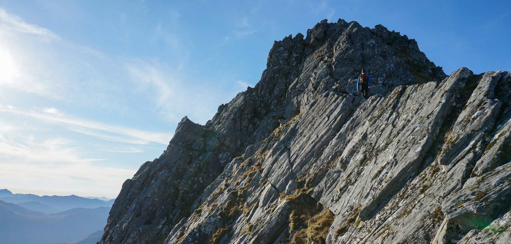
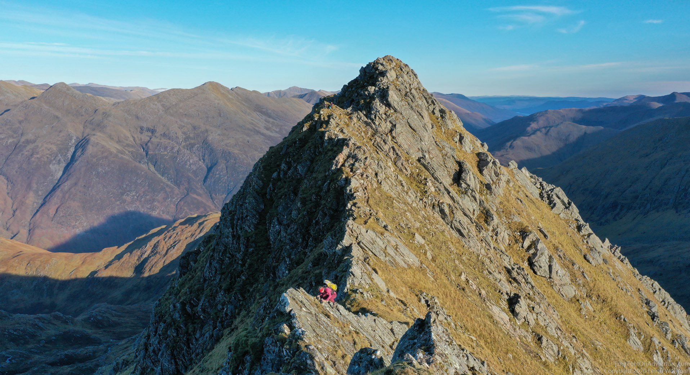
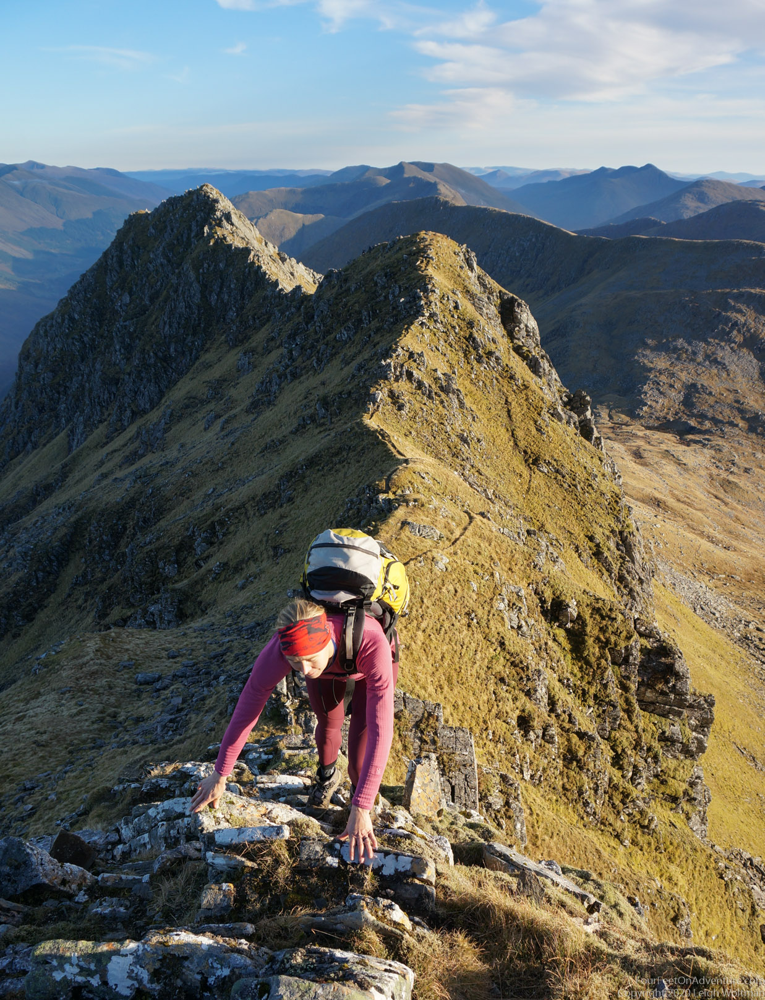
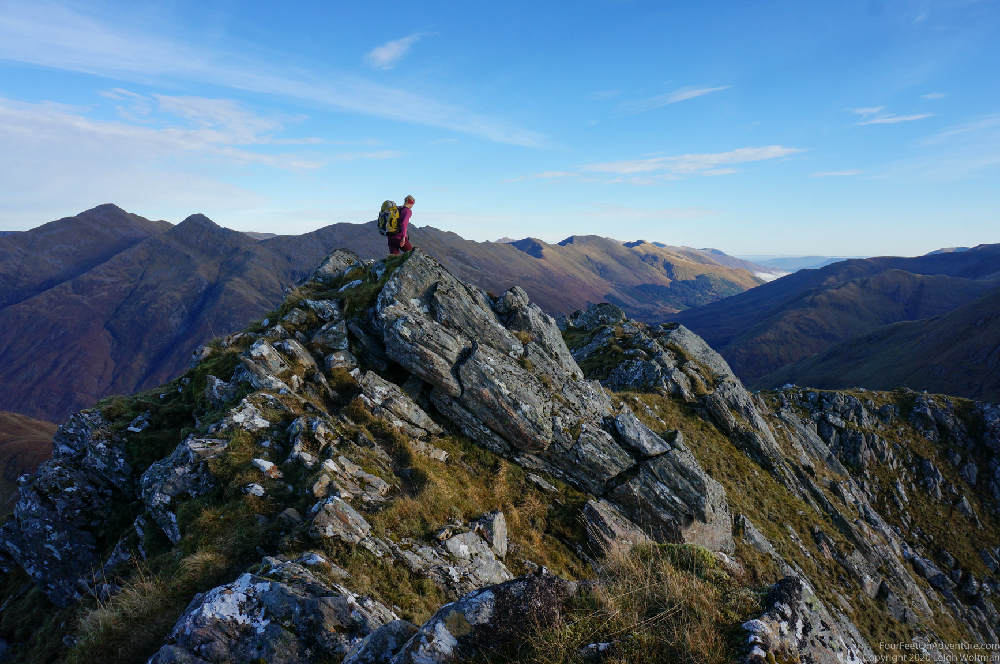
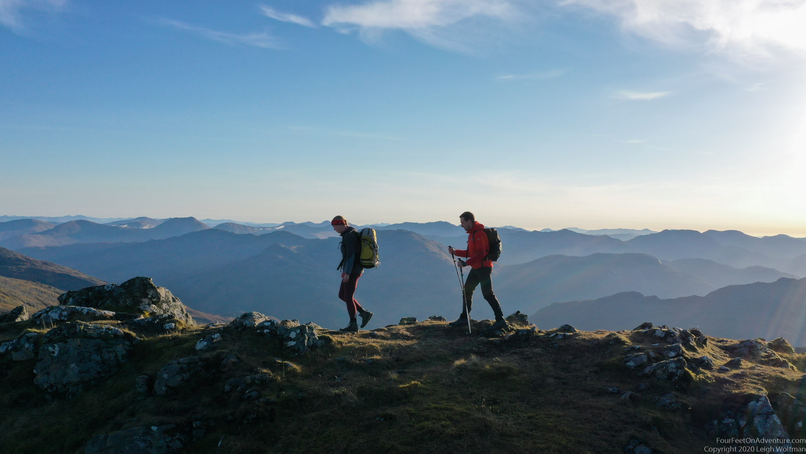
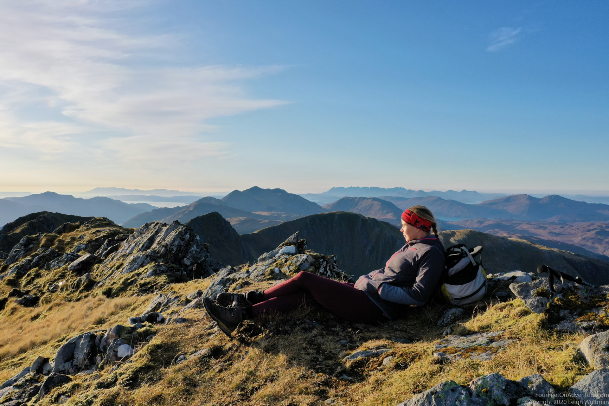

This ridge is known as one of the best scrambles in Scotland. A scramble is in between a walk and a climb. You need your hands, but don’t need a rope yet. You can imagine that this threshold is different for everyone, and on the harder scrambles it might be worth to have a rope in the backpack just in case. The ridge is located in Kintail, an area with many steep high hills near Skye. This ridge is quite popular and can get busy in the summer (busy in Scotland is still relative). We had the luck of an unexpected no-wind sunny day late in the fall and decided to give it a try.

The trail up to the start of the ridge was good quality and easy going. The ridge itself was simply a lot of fun. Many exposed steps made for engaged scrambling. Nothing passed our comfort zones. We met one other couple on the ridge to who we talked to for a while. We then kept on passing each other when the other team was taking a break taking up the beauty around us. I always wish such ridges just keep going, but eventually there is always an end to them.

This one ended in a munro top, named the Saddle (1010 m). It must have a Gaelic name too, just like all of them, but for the first time in forever we can pronounce where we’ve been, so we’ll take it!



